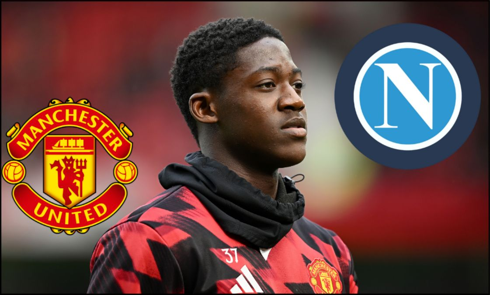
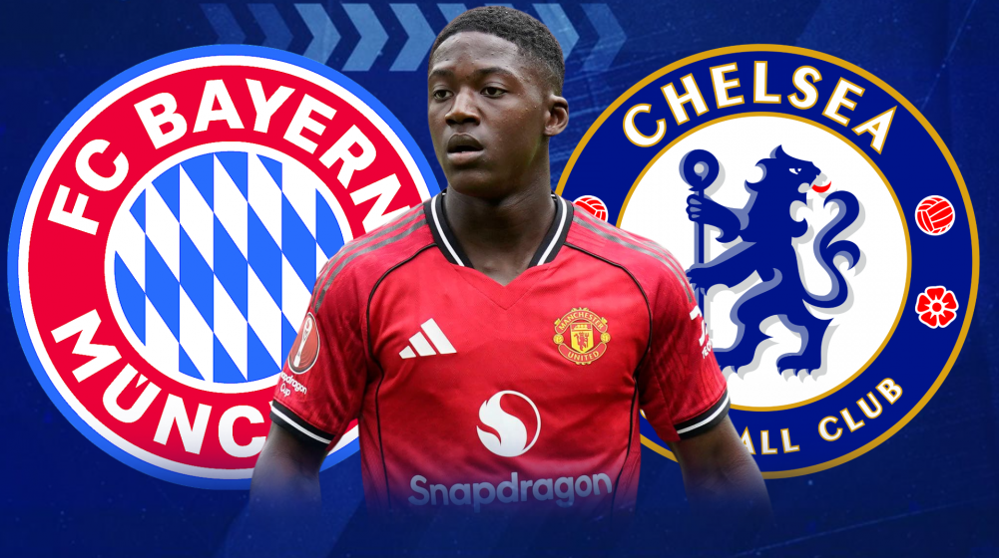

the latest mainoo-news sports news
Italian club Napoli are "aggressively pushing" to sign Manchester United’s young midfielder Kobbie Mainoo in the upcoming transfer window. Why it matters: If the move happens, it could reshape both clubs’ midfield strategies and highlight the ongoing trend of top clubs poaching young talent. Possible angles: What Mainoo brings to the pitch, Manchester United’s response, how Napoli might fit him into their system, transfer fee speculations.


F1 São Paulo GP 2025 — Latest News
Lando Norris dominated the weekend in Brazil, taking Sprint victory and pole position for the main race. His strong form puts him firmly in contention for the 2025 world title. Max Verstappen suffered a shock Q1 elimination, his worst qualifying in years, after Red Bull admitted setup mistakes. Oscar Piastri’s title hopes also took a hit following a crash in the Sprint race. Heavy rain and unpredictable weather at Interlagos are expected to shape race strategy. Meanwhile, teams voiced concerns over proposed mandatory two-stop rules, arguing it could reduce racing freedom.